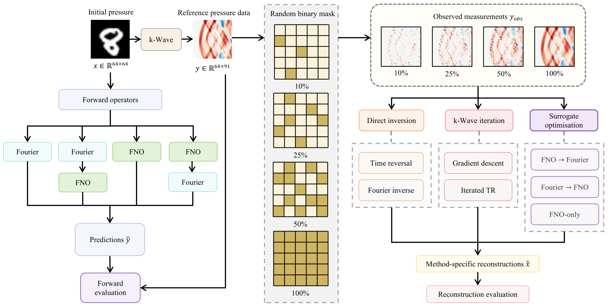
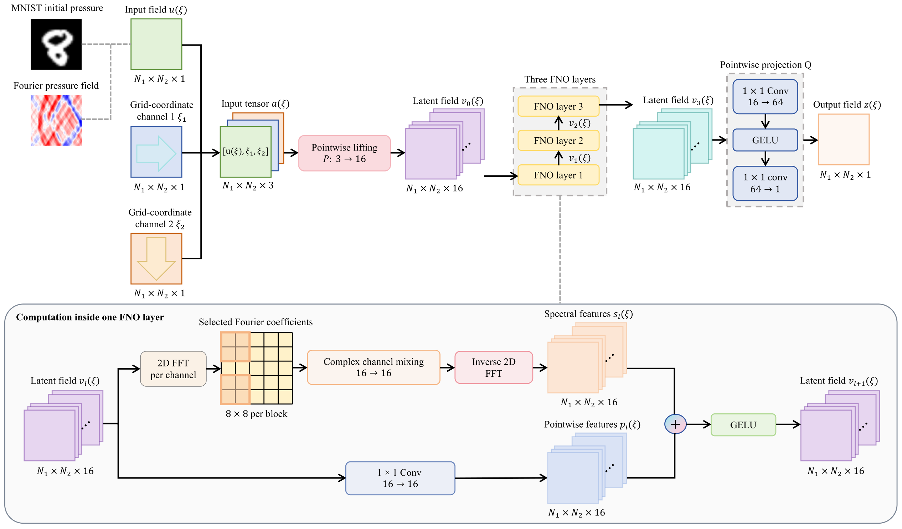
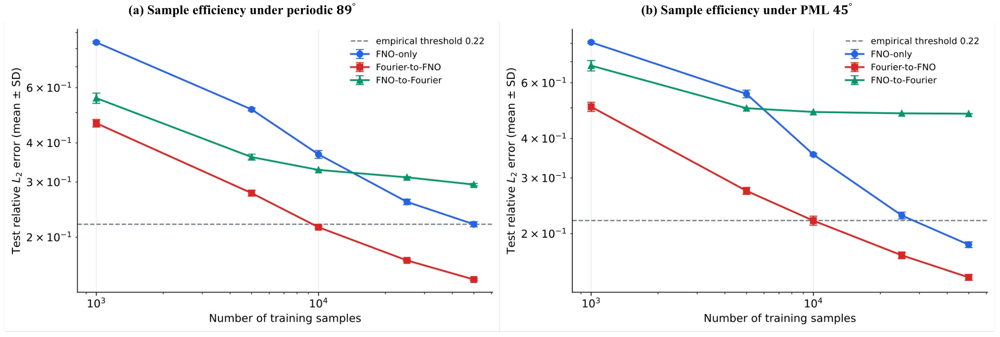
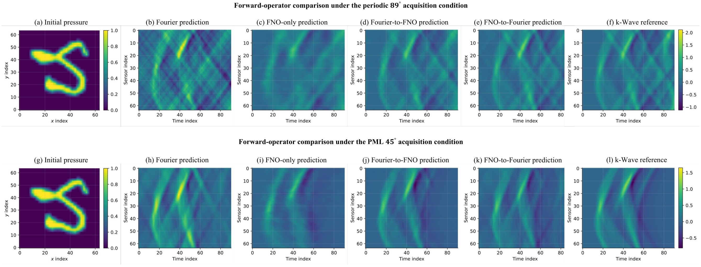
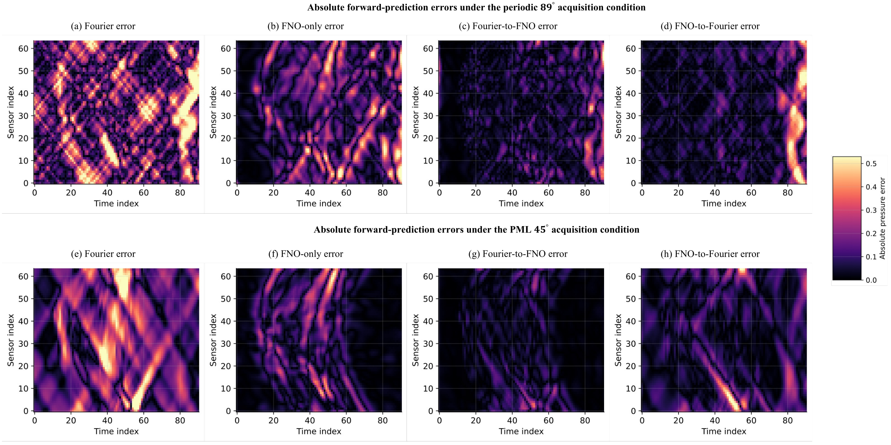
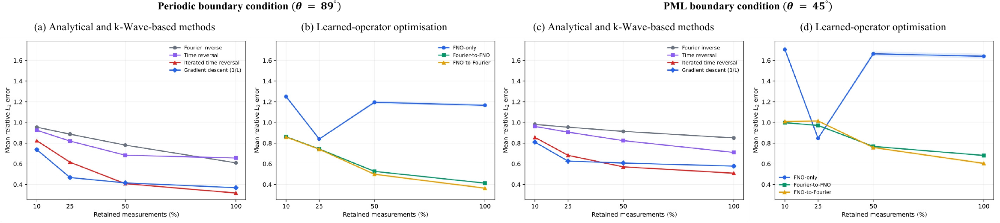
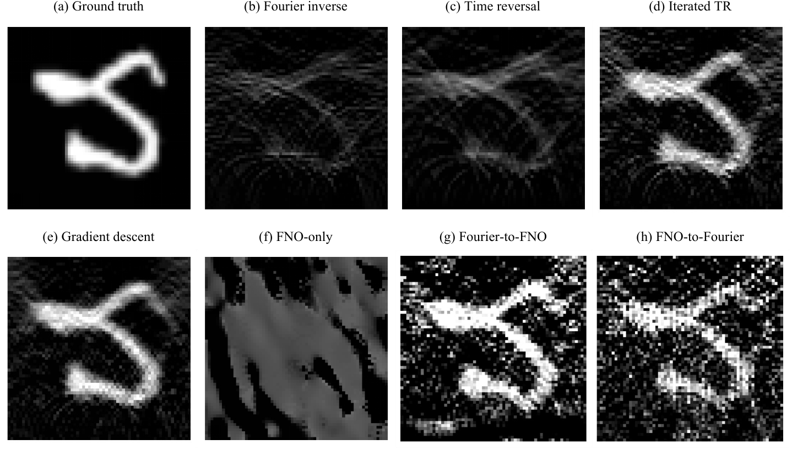
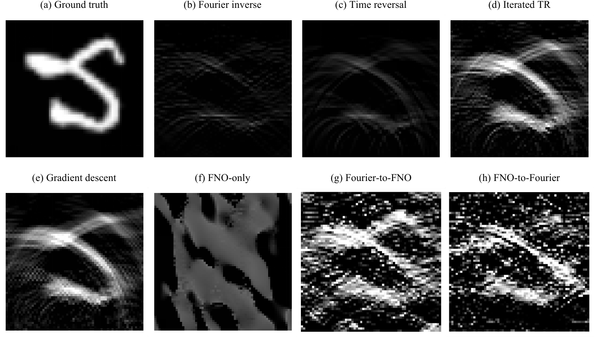

Can learned operators replace repeated wave solves?
The study measures approximation quality, data requirements, runtime and downstream inverse behaviour rather than reporting forward error alone.
Fourier-guided approximation of k-Wave and reconstruction from incomplete measurements.
Photoacoustic tomography (PAT) combines optical absorption contrast with acoustic detection and depends on accurate wave-propagation models for simulation and image reconstruction. Although k-Wave provides a flexible pseudospectral solver, repeated evaluations are computationally expensive. This thesis investigates Fourier neural operators as fast PAT forward surrogates. A homogeneous analytical Fourier model is compared with FNO-only and two hybrid configurations. FNO-only learns the complete forward map, while Fourier-to-FNO applies a measurement-space post-correction and FNO-to-Fourier applies an image-space correction before Fourier propagation. The models are evaluated using a nearly complete angular aperture with periodic boundary conditions and a limited-view aperture with an external perfectly matched layer.
Fourier-to-FNO achieves the lowest forward relative L2 errors, 0.2242 and 0.2209. Across five training-set sizes and three independent random seeds, it reaches a mean-error threshold of 0.22 with 10,000 examples under both conditions. FNO-only first reaches this threshold with 50,000 examples, whereas FNO-to-Fourier does not reach it, indicating that sample efficiency is sensitive to correction placement under the tested conditions. For applications requiring repeated forward evaluations, the learned surrogates are approximately 11–19 times faster than k-Wave in the CPU comparison.
Reconstruction is evaluated at four subsampling levels. Across all seven methods, gradient descent achieves the lowest mean reconstruction relative L2 error at 10% and 25% measurement retention, whereas validation-tuned iterated time reversal achieves the lowest mean error at 50% and 100% retention. Despite its superior forward accuracy, Fourier-to-FNO does not consistently provide the best learned reconstruction, and k-Wave-based iterative methods give the most accurate reconstructions. The principal benefit of Fourier-to-FNO is its substantially improved training-sample efficiency in learning the forward map. It is not a general replacement for k-Wave in reconstruction.
Future work could investigate a hybrid strategy in which surrogate operators perform most reconstruction iterations and k-Wave is used for the final two or three updates.
The study measures approximation quality, data requirements, runtime and downstream inverse behaviour rather than reporting forward error alone.
All learned models share the same FNO capacity. Their main difference is whether analytical propagation appears before or after the learned correction.
Measurement-space correction is the strongest forward design, while k-Wave-based iterative methods remain the most reliable reconstruction approach.
k-Wave provides the numerical reference. An analytical Fourier approximation is evaluated alone and composed with a shared Fourier neural operator in two different orders.


Fourier-to-FNO is the strongest forward surrogate across both dataset scales and acquisition conditions. The complete headline tables below reproduce the values reported in the dissertation.
Rel. L2 ↓ · correlation ↑ · MSE ↓
| Scale | Condition | Method | Rel. L2 | Corr. | MSE |
|---|---|---|---|---|---|
| Medium | Periodic 89° | Scaled Fourier | 1.0633 | .7726 | .083123 |
| FNO-only | .5124 | .8100 | .021386 | ||
| Fourier-to-FNO | .2732 | .9499 | .005713 | ||
| FNO-to-Fourier | .3639 | .9121 | .010546 | ||
| Medium | PML 45° | Scaled Fourier | 1.0027 | .8046 | .036413 |
| FNO-only | .5453 | .8277 | .010662 | ||
| Fourier-to-FNO | .2670 | .9610 | .002368 | ||
| FNO-to-Fourier | .4988 | .8610 | .008628 | ||
| Large | Periodic 89° | Scaled Fourier | 1.0648 | .7718 | .084982 |
| FNO-only | .3787 | .9009 | .011669 | ||
| Fourier-to-FNO | .2242 | .9661 | .003893 | ||
| FNO-to-Fourier | .3314 | .9268 | .009168 | ||
| Large | PML 45° | Scaled Fourier | 1.0067 | .8030 | .036813 |
| FNO-only | .3765 | .9217 | .004943 | ||
| Fourier-to-FNO | .2209 | .9733 | .001625 | ||
| FNO-to-Fourier | .4885 | .8663 | .008275 |
Mean ± SD over three seeds
| Condition | Model | 1k | 5k | 10k | 25k | 50k | ≤ .22 |
|---|---|---|---|---|---|---|---|
| Periodic 89° | FNO-only | .837 ± .007 | .511 ± .006 | .368 ± .011 | .259 ± .005 | .220 ± .004 | 50k |
| Fourier-to-FNO | .462 ± .013 | .277 ± .006 | .215 ± .002 | .169 ± .001 | .147 ± .001 | 10k | |
| FNO-to-Fourier | .556 ± .021 | .360 ± .008 | .328 ± .001 | .311 ± .002 | .294 ± .002 | Not reached | |
| PML 45° | FNO-only | .806 ± .006 | .554 ± .015 | .356 ± .003 | .228 ± .006 | .184 ± .004 | 50k |
| Fourier-to-FNO | .504 ± .017 | .273 ± .007 | .220 ± .007 | .171 ± .004 | .145 ± .003 | 10k | |
| FNO-to-Fourier | .680 ± .026 | .499 ± .001 | .485 ± .001 | .480 ± .000 | .479 ± .000 | Not reached |



Milliseconds per sample · mean ± SD
| Mode | Batch | Method | Periodic ms | PML ms | Speed-up |
|---|---|---|---|---|---|
| CPU | 1 | Fourier | .876 ± .249 | .888 ± .176 | 46.9–55.2× |
| 1 | FNO-only | 2.952 ± .489 | 2.855 ± .445 | 13.9–17.2× | |
| 1 | Fourier-to-FNO | 3.757 ± .967 | 3.742 ± .782 | 10.9–13.1× | |
| 1 | FNO-to-Fourier | 2.481 ± .473 | 2.523 ± .459 | 16.5–19.4× | |
| 1 | k-Wave | 41.045 ± 4.644 | 48.991 ± 3.241 | 1× | |
| RTX 4090 | 1 | Fourier | 1.525 ± .129 | 1.659 ± .121 | 94.4–99.9× |
| 1 | FNO-only | 1.477 ± .116 | 1.474 ± .118 | 97.5–112.4× | |
| 1 | Fourier-to-FNO | 2.976 ± .201 | 3.006 ± .238 | 48.4–55.1× | |
| 1 | FNO-to-Fourier | 2.951 ± .202 | 2.941 ± .226 | 48.8–56.3× | |
| RTX 4090 | 64 | Fourier | .029 ± .002 | .027 ± .001 | 4852–6039× |
| 64 | FNO-only | .036 ± .002 | .034 ± .001 | 3875–4844× | |
| 64 | Fourier-to-FNO | .066 ± .003 | .061 ± .001 | 2130–2697× | |
| 64 | FNO-to-Fourier | .059 ± .003 | .055 ± .002 | 2390–3022× |
GPU speed-ups use the contemporaneous CPU k-Wave reference from the corresponding benchmark run, as specified in the thesis.
Seven methods are evaluated over 1,000 test images at four retention levels. The full headline table includes bootstrap 95% confidence intervals.
Mean relative L2 [bootstrap 95% CI]
| Condition | Method | 10% | 25% | 50% | 100% |
|---|---|---|---|---|---|
| Periodic 89° | Fourier inverse | .954 [.953,.954] | .886 [.885,.888] | .781 [.778,.784] | .609 [.604,.615] |
| Time reversal | .924 [.923,.925] | .820 [.817,.823] | .683 [.679,.687] | .656 [.651,.661] | |
| Iterated TR | .823 [.821,.826] | .616 [.611,.620] | .408 [.401,.414] | .317 [.310,.325] | |
| Gradient descent | .737 [.734,.740] | .467 [.462,.473] | .415 [.410,.421] | .368 [.362,.375] | |
| FNO-only | 1.250 [1.236,1.265] | .840 [.836,.844] | 1.195 [1.181,1.209] | 1.166 [1.152,1.179] | |
| Fourier-to-FNO | .862 [.855,.868] | .743 [.735,.751] | .527 [.521,.532] | .413 [.408,.418] | |
| FNO-to-Fourier | .858 [.856,.861] | .741 [.735,.746] | .499 [.492,.506] | .364 [.355,.372] | |
| PML 45° | Fourier inverse | .981 [.981,.981] | .954 [.953,.955] | .913 [.912,.915] | .850 [.846,.854] |
| Time reversal | .961 [.961,.962] | .906 [.905,.908] | .824 [.821,.827] | .710 [.705,.715] | |
| Iterated TR | .855 [.853,.858] | .682 [.677,.687] | .571 [.564,.577] | .509 [.502,.517] | |
| Gradient descent | .810 [.807,.813] | .626 [.621,.632] | .608 [.602,.614] | .578 [.571,.584] | |
| FNO-only | 1.705 [1.683,1.730] | .847 [.842,.851] | 1.663 [1.641,1.687] | 1.640 [1.617,1.664] | |
| Fourier-to-FNO | .997 [.993,1.002] | .971 [.964,.978] | .768 [.761,.774] | .681 [.674,.688] | |
| FNO-to-Fourier | 1.009 [1.007,1.012] | 1.014 [1.008,1.020] | .757 [.749,.766] | .604 [.594,.614] |
Gradient descent is strongest under severe subsampling (10–25%), while validation-selected iterated time reversal finishes lower at 50–100% retention under both acquisition conditions.



The repository provides a pinned environment, versioned experiment configurations, automated tests, compact offline assets and command-line entry points for the complete workflow.
Create the validated Python environment and install the project in editable mode.
Run the fixed CPU example using the bundled inputs, target data, checkpoint, masks and expected metrics.
Use the versioned YAML protocols and scripts for data generation, training, forward evaluation and reconstruction.
conda env create -f environment.yml
conda activate pat_fno
python -m pip install -e .python -m scripts.smoke.run_reproducibility_check \
--config smoke/reproducibility.yamlThis CPU workflow uses four fixed large-test inputs, their k-Wave targets, a trained FNO-only checkpoint, 25% measurement masks and expected metrics. It does not download MNIST or regenerate the full k-Wave dataset. A successful run reports Overall reproducibility check: PASS and writes results/smoke/summary.json.
python -m pytest tests/unit -q
python -m pytest tests/integration -m slow
ruff format --check .
ruff check .python -m scripts.data.generate_mnist_dataset --help
python -m scripts.train.train_forward_operator --help
python -m scripts.evaluation.evaluate_forward --help
python -m scripts.evaluation.benchmark_forward_operators --help
python -m scripts.reconstruction.run_reconstruction --helpCompleted protocols are stored under configs/data, configs/training, configs/evaluation and configs/reconstruction. Full-scale runs require the complete MNIST-derived PAT datasets and trained checkpoints, which are excluded from Git because of their size. Curated final tables and figures remain under results/.
Experimental scope. The study uses two-dimensional MNIST-derived initial-pressure distributions in a homogeneous acoustic medium, a fixed computational grid and two prescribed acquisition conditions. No artificial measurement noise is added. The results assess controlled forward-model approximation and incomplete-data reconstruction, not clinical PAT performance.
Interpretation. Runtime gains depend on the stated hardware, batching strategy and implementation. GPU throughput comparisons are not same-device single-sample comparisons. Fourier-to-FNO provides the strongest forward accuracy and sample efficiency, but does not consistently provide the best learned reconstruction; the evidence therefore does not support replacing k-Wave universally in inverse reconstruction.